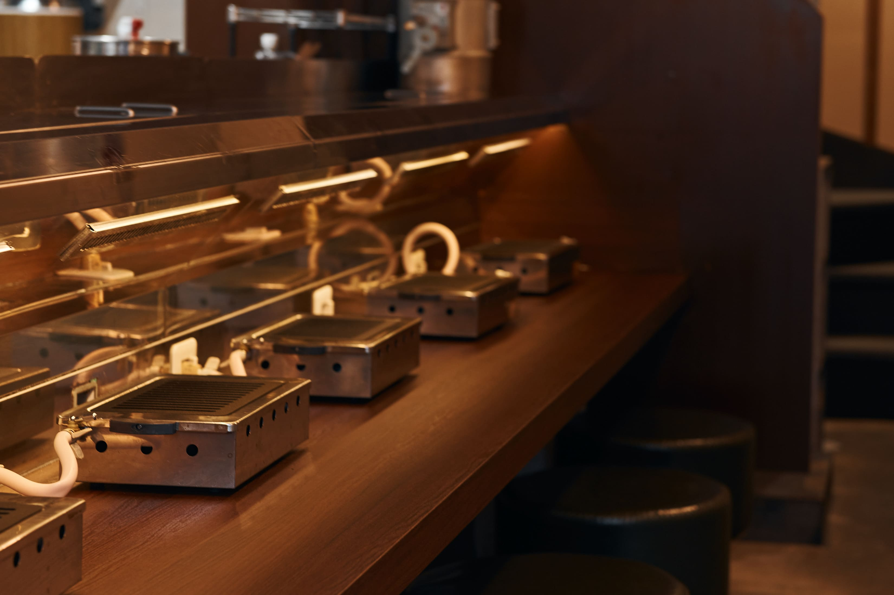
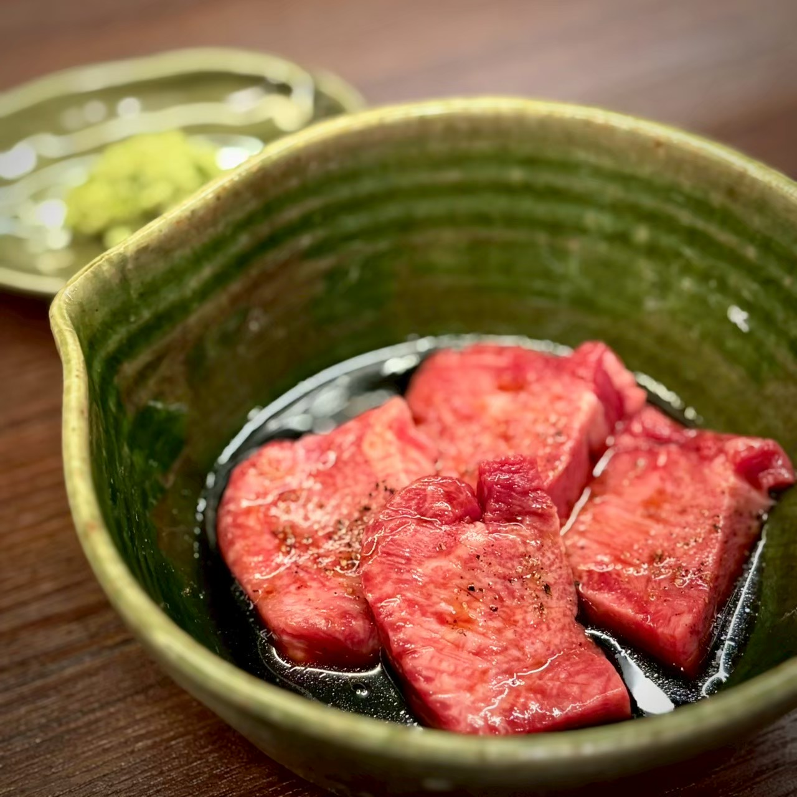
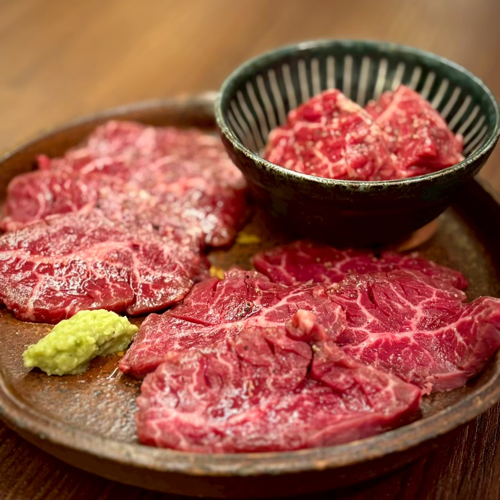
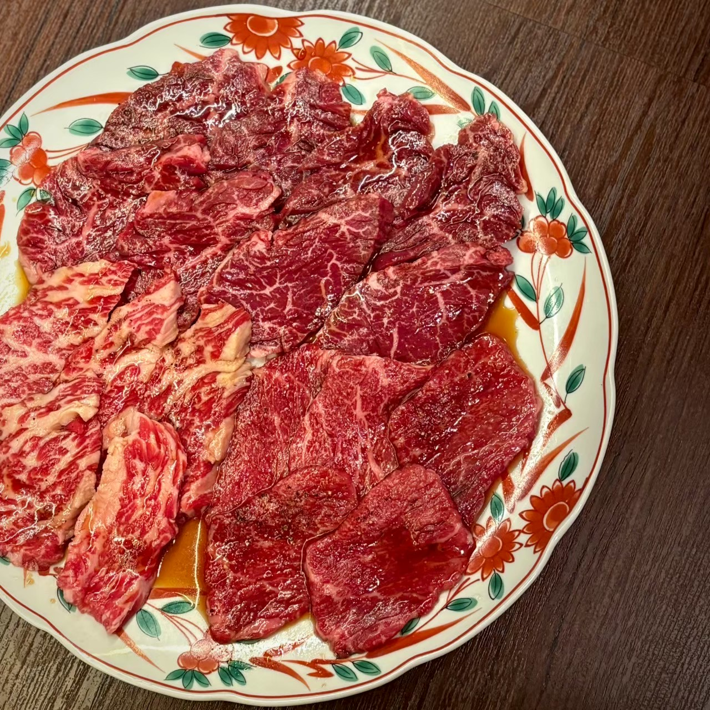
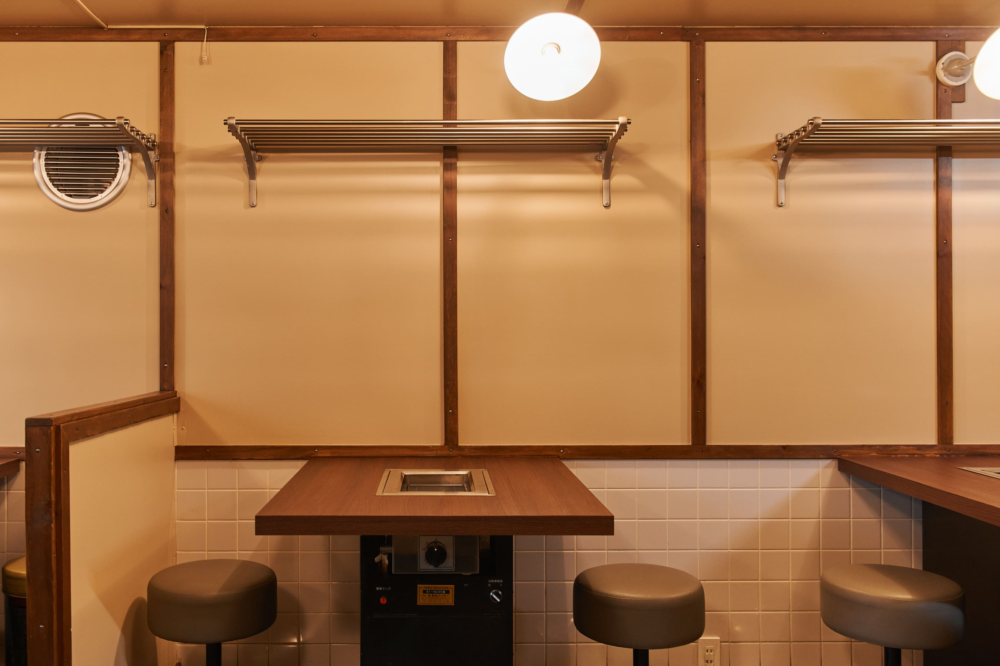
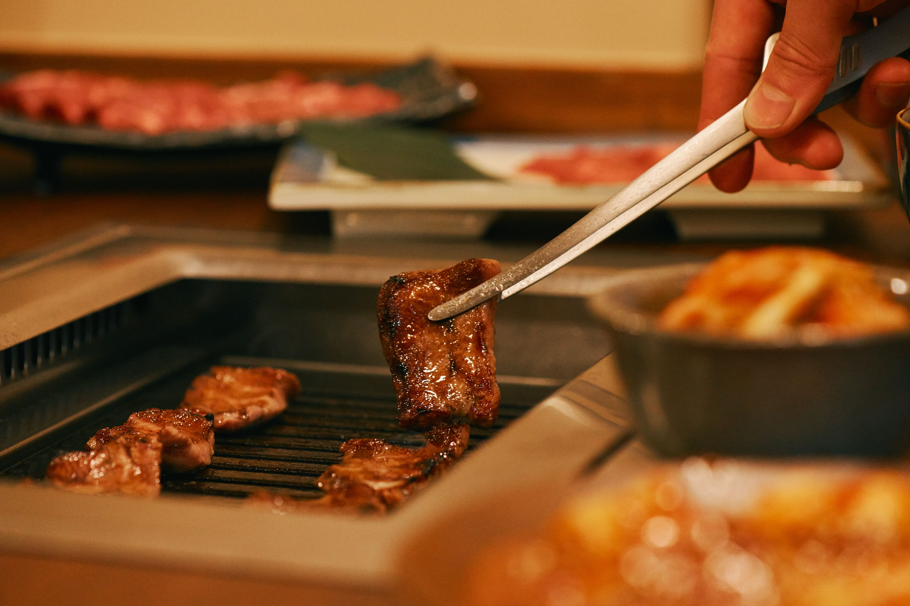

Shimokitazawa — Yakiniku
大阪焼肉の流儀を、下北沢の街に。
厳選のタン・ハラミ、無煙の清潔な空間。
昔ながらの焼肉屋を、現代にモダナイズする。


Concept
国産和牛とプライム・アンガスビーフの"いいとこどり"。
大阪焼肉の技と哲学を東京・下北沢で再解釈した、モダンな一軒。
無煙ロースターを完備し、煙を抑えた清潔な空間。
コストパフォーマンスを守りながら、素材と火入れで勝負する。
Our Meat
肉焼き職人が目利きした、自慢の二枚看板。
旨味と柔らかさが際立つフレッシュな仕入れを、驚きの価格でお届けする。


Store
木目と黒を基調にした落ち着いた空間。
無煙ロースターで、服に匂いがつかない清潔感。


Access